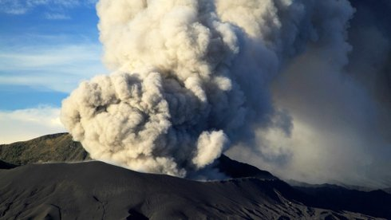

Above Us Only Sky

Arthur KLeinjan
|
NL,
CZ 2019
|
Dienstag 15 okt | 18.30 | werkstattkino | mit FROM
TOMORROW ON, I WILL
Untersuchung der surrealen Logik des Zufalls: 2010 hindert der Vulkan Eyjafjallajökull den Filmemacher daran, nach Prag zu fliegen, was ihn gedanklich zur serbischen Stewardess bringt, die als einzige Überlebende eines Absturzes in der Tschechoslowakei 1972 ins Guinness-Buch der Rekorde kam.
Arthur Kleinjan geb. 1970 in Rotterdam, ist bildender Künstler. Studium an den Kunstakademien in Rotterdam und Amsterdam. Seine Foto- und Videoarbeiten wurden international ausgestellt, darunter Einzelaus-stellungen in Wien, Vancouver und Berlin. ABOVE US ONLY SKY ist die Kinoversion seiner gleichnamigen 3-Kanal-Video-Installation. |
Filme Moments of Considered Time 2007 | Above Us Only Sky 2019 |